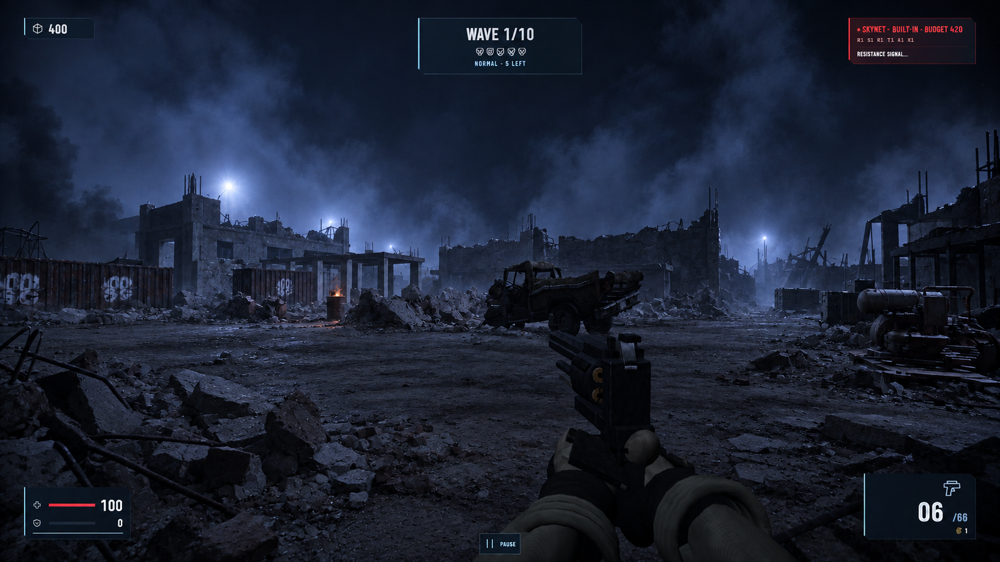
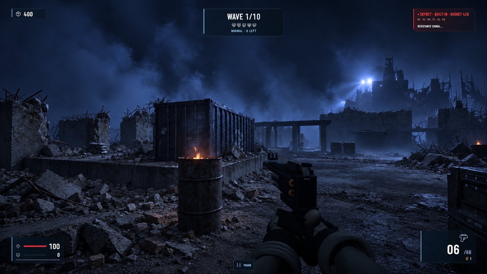
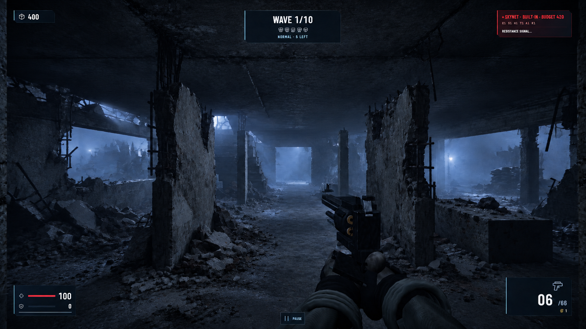
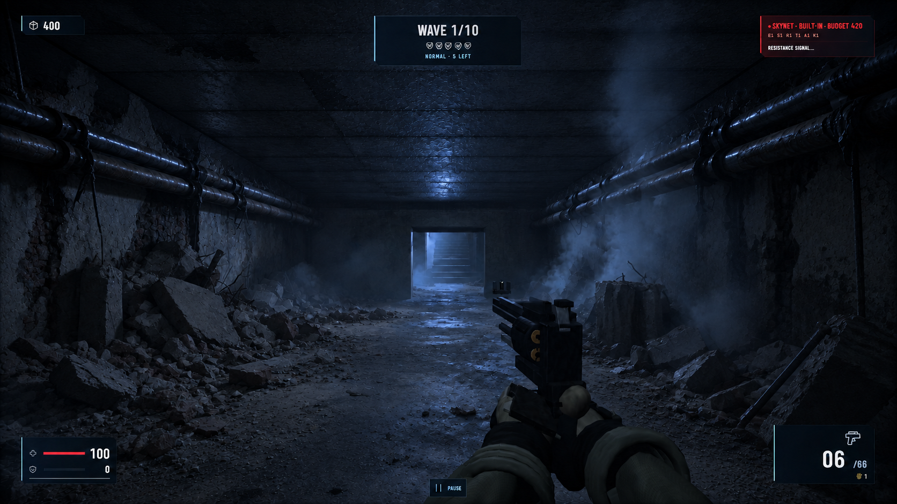
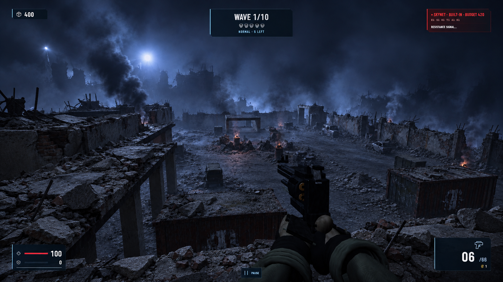

{kind=link}
Courtyard / resistance stronghold
01 / 05Ground-level diagonal across the central combat yard toward the command building and eastern structures.


Exact v3 edit prompt + saved POV
Feet: [-12, 0, -17] · Look at: [5, 2, 18] · 72° FOV · 1.65 m standing eye height
Prompt file · Inputs: matching v2 target, real debris photograph, original gameplay capture.
Use case: precise-object-edit. Version 3 — improve debris formation and material variation; reduce grain and visual noise. INPUT ROLES Image 1 is the matching VERSION 2 TARGET and is the edit target. Its James Cameron / original The Terminator (1984) blue-black Future War atmosphere, lighting, composition and design are approved. Preserve them. Image 2 is the user's REAL-WORLD DEBRIS photograph. Study its collapse mechanics, fragment sizes, surface organization and material differences. Use those properties only. Do not copy its tilted camera, building layout, arches, daylight, neutral color grade or foreground tape. Image 3 is the original gameplay screenshot. It anchors the unchanged camera, openings, floor elevations and cover positions. Retain the v2 environment while keeping those structural anchors intact. SPECIFIC CHANGE Replace v2's uniformly crunchy, sparkling, pebbled texture treatment with physically readable rubble and calmer material surfaces. Remove visible film grain, digital speckling, sharpening halos and the blanket of tiny bright edge highlights. Render cleanly, with natural optical softness and smooth blue smoke gradients; do not blur the whole image or erase real object detail. Keep exactly the same overall exposure, cold blue palette, dark silhouettes, smoke placement, backlight direction and localized faint fires as Image 1. LEARN FROM THE REAL DEBRIS PHOTO The rubble is a gravity-settled collapse, not scattered identical rocks: a few substantial broken wall/slab sections establish the mass; angular masonry blocks and flat plaster fragments wedge underneath and between them; small chips, sand and fine dust fill low pockets. Broad slab faces remain relatively smooth and readable, while only fracture edges reveal coarse aggregate. Bricks/block fragments retain traces of straight manufactured edges. Some plaster remains attached to masonry. Large pieces lie tilted and overlap with deep occluded gaps, giving each pile weight, direction and a plausible source in the nearby damaged wall. Fine debris spreads in a thinning apron at the pile's foot. Bent reinforcement belongs to fractured slabs; cable lengths sag under gravity. Vary fragment size, thickness and orientation substantially, with irregular local clustering and quiet gaps. SURFACE HIERARCHY Give walls large coherent areas of surviving plaster or cast concrete, localized cracks and impact zones, exposed brick/block patches, and broad irregular soot or water stains. Damage relates to corners, joints, loads and collapse; do not emboss identical pits over every face. Ground routes have broad quieter dusty surfaces interrupted by localized rubble fans and isolated fragments, not an evenly dense rubble carpet. Concrete, brick, dust, painted metal and corroded steel each have distinct roughness and wear. Dust softens most highlights. Reserve sharper cold glints for a few actual exposed metal edges. Eliminate visible texture tiling, recurring crack stamps, repeated stone shapes, equally spaced damage and identical roughness across materials. Let small texture detail diminish naturally with distance; avoid glinting detail in every pixel. PRESERVE Keep Image 1's major rubble/cover footprints and cover heights; reform the pieces within those bounds. Keep the same framing, 16:9 aspect ratio, field of view, horizon, perspective, buildings, truck, containers, openings, stairs, pipes and props. Keep the player weapon, hands and HUD unchanged in position, shape and design. Keep all paths and sightlines traversable. Preserve enclosed ceilings in the interiors. Add no new structures, characters, enemies, laser beams, signage or lighting scheme. No warm relighting, glossy wet paving, heavy film grain, global blur or denoising smear. Improve only debris realism, surface variation and image cleanliness. Output one complete polished player POV, not a collage. POV-SPECIFIC CONSTRAINTS Courtyard: keep the truck and generator fixed. Reshape the central rubble divide and existing wall-base piles into a few interlocked slab masses with smaller masonry infill. Restore quieter dusty ground between cover zones. Keep the command block and colonnade silhouettes and blue smoke composition.
Cargo approach / eastern flank
02 / 05Ground-level approach to the container dock, with cover, cargo silhouettes and the barracks beyond.


Exact v3 edit prompt + saved POV
Feet: [15, 0, -19] · Look at: [25, 2, 7] · 72° FOV · 1.65 m standing eye height
Prompt file · Inputs: matching v2 target, real debris photograph, original gameplay capture.
Use case: precise-object-edit. Version 3 — improve debris formation and material variation; reduce grain and visual noise. INPUT ROLES Image 1 is the matching VERSION 2 TARGET and is the edit target. Its James Cameron / original The Terminator (1984) blue-black Future War atmosphere, lighting, composition and design are approved. Preserve them. Image 2 is the user's REAL-WORLD DEBRIS photograph. Study its collapse mechanics, fragment sizes, surface organization and material differences. Use those properties only. Do not copy its tilted camera, building layout, arches, daylight, neutral color grade or foreground tape. Image 3 is the original gameplay screenshot. It anchors the unchanged camera, openings, floor elevations and cover positions. Retain the v2 environment while keeping those structural anchors intact. SPECIFIC CHANGE Replace v2's uniformly crunchy, sparkling, pebbled texture treatment with physically readable rubble and calmer material surfaces. Remove visible film grain, digital speckling, sharpening halos and the blanket of tiny bright edge highlights. Render cleanly, with natural optical softness and smooth blue smoke gradients; do not blur the whole image or erase real object detail. Keep exactly the same overall exposure, cold blue palette, dark silhouettes, smoke placement, backlight direction and localized faint fires as Image 1. LEARN FROM THE REAL DEBRIS PHOTO The rubble is a gravity-settled collapse, not scattered identical rocks: a few substantial broken wall/slab sections establish the mass; angular masonry blocks and flat plaster fragments wedge underneath and between them; small chips, sand and fine dust fill low pockets. Broad slab faces remain relatively smooth and readable, while only fracture edges reveal coarse aggregate. Bricks/block fragments retain traces of straight manufactured edges. Some plaster remains attached to masonry. Large pieces lie tilted and overlap with deep occluded gaps, giving each pile weight, direction and a plausible source in the nearby damaged wall. Fine debris spreads in a thinning apron at the pile's foot. Bent reinforcement belongs to fractured slabs; cable lengths sag under gravity. Vary fragment size, thickness and orientation substantially, with irregular local clustering and quiet gaps. SURFACE HIERARCHY Give walls large coherent areas of surviving plaster or cast concrete, localized cracks and impact zones, exposed brick/block patches, and broad irregular soot or water stains. Damage relates to corners, joints, loads and collapse; do not emboss identical pits over every face. Ground routes have broad quieter dusty surfaces interrupted by localized rubble fans and isolated fragments, not an evenly dense rubble carpet. Concrete, brick, dust, painted metal and corroded steel each have distinct roughness and wear. Dust softens most highlights. Reserve sharper cold glints for a few actual exposed metal edges. Eliminate visible texture tiling, recurring crack stamps, repeated stone shapes, equally spaced damage and identical roughness across materials. Let small texture detail diminish naturally with distance; avoid glinting detail in every pixel. PRESERVE Keep Image 1's major rubble/cover footprints and cover heights; reform the pieces within those bounds. Keep the same framing, 16:9 aspect ratio, field of view, horizon, perspective, buildings, truck, containers, openings, stairs, pipes and props. Keep the player weapon, hands and HUD unchanged in position, shape and design. Keep all paths and sightlines traversable. Preserve enclosed ceilings in the interiors. Add no new structures, characters, enemies, laser beams, signage or lighting scheme. No warm relighting, glossy wet paving, heavy film grain, global blur or denoising smear. Improve only debris realism, surface variation and image cleanliness. Output one complete polished player POV, not a collage. POV-SPECIFIC CONSTRAINTS Cargo flank: keep container corrugations, platform, barrel and right crate fixed. Damage the loading slab selectively at its exposed edges; leave broad intact dusty platform and lane surfaces. Concentrate settled debris at the existing broken walls rather than covering the entire lane. Steel corrugations must not have the same rocky texture as concrete.
Barracks / inhabited shelter
03 / 05Standing inside the barracks, looking along the occupied room toward its stairs.


Exact v3 edit prompt + saved POV
Feet: [36, 0, 5.5] · Look at: [36, 1.65, 22] · 72° FOV · 1.65 m standing eye height
Prompt file · Inputs: matching v2 target, real debris photograph, original gameplay capture.
Use case: precise-object-edit. Version 3 — improve debris formation and material variation; reduce grain and visual noise. INPUT ROLES Image 1 is the matching VERSION 2 TARGET and is the edit target. Its James Cameron / original The Terminator (1984) blue-black Future War atmosphere, lighting, composition and design are approved. Preserve them. Image 2 is the user's REAL-WORLD DEBRIS photograph. Study its collapse mechanics, fragment sizes, surface organization and material differences. Use those properties only. Do not copy its tilted camera, building layout, arches, daylight, neutral color grade or foreground tape. Image 3 is the original gameplay screenshot. It anchors the unchanged camera, openings, floor elevations and cover positions. Retain the v2 environment while keeping those structural anchors intact. SPECIFIC CHANGE Replace v2's uniformly crunchy, sparkling, pebbled texture treatment with physically readable rubble and calmer material surfaces. Remove visible film grain, digital speckling, sharpening halos and the blanket of tiny bright edge highlights. Render cleanly, with natural optical softness and smooth blue smoke gradients; do not blur the whole image or erase real object detail. Keep exactly the same overall exposure, cold blue palette, dark silhouettes, smoke placement, backlight direction and localized faint fires as Image 1. LEARN FROM THE REAL DEBRIS PHOTO The rubble is a gravity-settled collapse, not scattered identical rocks: a few substantial broken wall/slab sections establish the mass; angular masonry blocks and flat plaster fragments wedge underneath and between them; small chips, sand and fine dust fill low pockets. Broad slab faces remain relatively smooth and readable, while only fracture edges reveal coarse aggregate. Bricks/block fragments retain traces of straight manufactured edges. Some plaster remains attached to masonry. Large pieces lie tilted and overlap with deep occluded gaps, giving each pile weight, direction and a plausible source in the nearby damaged wall. Fine debris spreads in a thinning apron at the pile's foot. Bent reinforcement belongs to fractured slabs; cable lengths sag under gravity. Vary fragment size, thickness and orientation substantially, with irregular local clustering and quiet gaps. SURFACE HIERARCHY Give walls large coherent areas of surviving plaster or cast concrete, localized cracks and impact zones, exposed brick/block patches, and broad irregular soot or water stains. Damage relates to corners, joints, loads and collapse; do not emboss identical pits over every face. Ground routes have broad quieter dusty surfaces interrupted by localized rubble fans and isolated fragments, not an evenly dense rubble carpet. Concrete, brick, dust, painted metal and corroded steel each have distinct roughness and wear. Dust softens most highlights. Reserve sharper cold glints for a few actual exposed metal edges. Eliminate visible texture tiling, recurring crack stamps, repeated stone shapes, equally spaced damage and identical roughness across materials. Let small texture detail diminish naturally with distance; avoid glinting detail in every pixel. PRESERVE Keep Image 1's major rubble/cover footprints and cover heights; reform the pieces within those bounds. Keep the same framing, 16:9 aspect ratio, field of view, horizon, perspective, buildings, truck, containers, openings, stairs, pipes and props. Keep the player weapon, hands and HUD unchanged in position, shape and design. Keep all paths and sightlines traversable. Preserve enclosed ceilings in the interiors. Add no new structures, characters, enemies, laser beams, signage or lighting scheme. No warm relighting, glossy wet paving, heavy film grain, global blur or denoising smear. Improve only debris realism, surface variation and image cleanliness. Output one complete polished player POV, not a collage. POV-SPECIFIC CONSTRAINTS Barracks: preserve the continuous low ceiling, rectangular window openings, broad partitions, narrow columns and distant stairs/doorway. Retain large surviving wall/plaster areas on the partitions. Group fallen masonry at their existing bases and side bays, keep a quieter dusty central aisle. The flat ceiling needs broad concrete planes with a few meaningful seams, not pebbled noise.
Service trench / underground route
04 / 05Standing on the sunken service floor, looking along the long maintenance route.


Exact v3 edit prompt + saved POV
Feet: [-36, -3.5, -12.5] · Look at: [-35.7, -1.85, 10] · 72° FOV · 1.65 m standing eye height
Prompt file · Inputs: matching v2 target, real debris photograph, original gameplay capture.
Use case: precise-object-edit. Version 3 — improve debris formation and material variation; reduce grain and visual noise. INPUT ROLES Image 1 is the matching VERSION 2 TARGET and is the edit target. Its James Cameron / original The Terminator (1984) blue-black Future War atmosphere, lighting, composition and design are approved. Preserve them. Image 2 is the user's REAL-WORLD DEBRIS photograph. Study its collapse mechanics, fragment sizes, surface organization and material differences. Use those properties only. Do not copy its tilted camera, building layout, arches, daylight, neutral color grade or foreground tape. Image 3 is the original gameplay screenshot. It anchors the unchanged camera, openings, floor elevations and cover positions. Retain the v2 environment while keeping those structural anchors intact. SPECIFIC CHANGE Replace v2's uniformly crunchy, sparkling, pebbled texture treatment with physically readable rubble and calmer material surfaces. Remove visible film grain, digital speckling, sharpening halos and the blanket of tiny bright edge highlights. Render cleanly, with natural optical softness and smooth blue smoke gradients; do not blur the whole image or erase real object detail. Keep exactly the same overall exposure, cold blue palette, dark silhouettes, smoke placement, backlight direction and localized faint fires as Image 1. LEARN FROM THE REAL DEBRIS PHOTO The rubble is a gravity-settled collapse, not scattered identical rocks: a few substantial broken wall/slab sections establish the mass; angular masonry blocks and flat plaster fragments wedge underneath and between them; small chips, sand and fine dust fill low pockets. Broad slab faces remain relatively smooth and readable, while only fracture edges reveal coarse aggregate. Bricks/block fragments retain traces of straight manufactured edges. Some plaster remains attached to masonry. Large pieces lie tilted and overlap with deep occluded gaps, giving each pile weight, direction and a plausible source in the nearby damaged wall. Fine debris spreads in a thinning apron at the pile's foot. Bent reinforcement belongs to fractured slabs; cable lengths sag under gravity. Vary fragment size, thickness and orientation substantially, with irregular local clustering and quiet gaps. SURFACE HIERARCHY Give walls large coherent areas of surviving plaster or cast concrete, localized cracks and impact zones, exposed brick/block patches, and broad irregular soot or water stains. Damage relates to corners, joints, loads and collapse; do not emboss identical pits over every face. Ground routes have broad quieter dusty surfaces interrupted by localized rubble fans and isolated fragments, not an evenly dense rubble carpet. Concrete, brick, dust, painted metal and corroded steel each have distinct roughness and wear. Dust softens most highlights. Reserve sharper cold glints for a few actual exposed metal edges. Eliminate visible texture tiling, recurring crack stamps, repeated stone shapes, equally spaced damage and identical roughness across materials. Let small texture detail diminish naturally with distance; avoid glinting detail in every pixel. PRESERVE Keep Image 1's major rubble/cover footprints and cover heights; reform the pieces within those bounds. Keep the same framing, 16:9 aspect ratio, field of view, horizon, perspective, buildings, truck, containers, openings, stairs, pipes and props. Keep the player weapon, hands and HUD unchanged in position, shape and design. Keep all paths and sightlines traversable. Preserve enclosed ceilings in the interiors. Add no new structures, characters, enemies, laser beams, signage or lighting scheme. No warm relighting, glossy wet paving, heavy film grain, global blur or denoising smear. Improve only debris realism, surface variation and image cleanliness. Output one complete polished player POV, not a collage. POV-SPECIFIC CONSTRAINTS Service passage: preserve the corrected continuous low FLAT CEILING across the whole upper frame; this passage stays fully enclosed with no sky or roof holes. Keep all pipes and far doorway/stair fixed. Use sparse dark concrete seams and localized spalling, varied slab/block debris at the existing wall bases, a mostly open dusty floor, and smooth soft steam at right. Preserve v2 cold doorway illumination.
Barracks roof / battlefield overview
05 / 05Standing on the stair-accessible barracks roof, looking across the dock and central yard. Eye height remains 1.65 m above the roof.


Exact v3 edit prompt + saved POV
Feet: [31.6, 6.4, 6] · Look at: [-6, 1, 0] · 72° FOV · 1.65 m standing eye height
Prompt file · Inputs: matching v2 target, real debris photograph, original gameplay capture.
Use case: precise-object-edit. Version 3 — improve debris formation and material variation; reduce grain and visual noise. INPUT ROLES Image 1 is the matching VERSION 2 TARGET and is the edit target. Its James Cameron / original The Terminator (1984) blue-black Future War atmosphere, lighting, composition and design are approved. Preserve them. Image 2 is the user's REAL-WORLD DEBRIS photograph. Study its collapse mechanics, fragment sizes, surface organization and material differences. Use those properties only. Do not copy its tilted camera, building layout, arches, daylight, neutral color grade or foreground tape. Image 3 is the original gameplay screenshot. It anchors the unchanged camera, openings, floor elevations and cover positions. Retain the v2 environment while keeping those structural anchors intact. SPECIFIC CHANGE Replace v2's uniformly crunchy, sparkling, pebbled texture treatment with physically readable rubble and calmer material surfaces. Remove visible film grain, digital speckling, sharpening halos and the blanket of tiny bright edge highlights. Render cleanly, with natural optical softness and smooth blue smoke gradients; do not blur the whole image or erase real object detail. Keep exactly the same overall exposure, cold blue palette, dark silhouettes, smoke placement, backlight direction and localized faint fires as Image 1. LEARN FROM THE REAL DEBRIS PHOTO The rubble is a gravity-settled collapse, not scattered identical rocks: a few substantial broken wall/slab sections establish the mass; angular masonry blocks and flat plaster fragments wedge underneath and between them; small chips, sand and fine dust fill low pockets. Broad slab faces remain relatively smooth and readable, while only fracture edges reveal coarse aggregate. Bricks/block fragments retain traces of straight manufactured edges. Some plaster remains attached to masonry. Large pieces lie tilted and overlap with deep occluded gaps, giving each pile weight, direction and a plausible source in the nearby damaged wall. Fine debris spreads in a thinning apron at the pile's foot. Bent reinforcement belongs to fractured slabs; cable lengths sag under gravity. Vary fragment size, thickness and orientation substantially, with irregular local clustering and quiet gaps. SURFACE HIERARCHY Give walls large coherent areas of surviving plaster or cast concrete, localized cracks and impact zones, exposed brick/block patches, and broad irregular soot or water stains. Damage relates to corners, joints, loads and collapse; do not emboss identical pits over every face. Ground routes have broad quieter dusty surfaces interrupted by localized rubble fans and isolated fragments, not an evenly dense rubble carpet. Concrete, brick, dust, painted metal and corroded steel each have distinct roughness and wear. Dust softens most highlights. Reserve sharper cold glints for a few actual exposed metal edges. Eliminate visible texture tiling, recurring crack stamps, repeated stone shapes, equally spaced damage and identical roughness across materials. Let small texture detail diminish naturally with distance; avoid glinting detail in every pixel. PRESERVE Keep Image 1's major rubble/cover footprints and cover heights; reform the pieces within those bounds. Keep the same framing, 16:9 aspect ratio, field of view, horizon, perspective, buildings, truck, containers, openings, stairs, pipes and props. Keep the player weapon, hands and HUD unchanged in position, shape and design. Keep all paths and sightlines traversable. Preserve enclosed ceilings in the interiors. Add no new structures, characters, enemies, laser beams, signage or lighting scheme. No warm relighting, glossy wet paving, heavy film grain, global blur or denoising smear. Improve only debris realism, surface variation and image cleanliness. Output one complete polished player POV, not a collage. POV-SPECIFIC CONSTRAINTS Roof overview: keep foreground parapet, long colonnade, container locations, central cover line and yard arrangement. Use larger readable slab faces on roof debris and localized broken coping; vary concrete, roof dust and container metal. At distance, group rubble into legible masses and tonal shapes with much less fine sparkling texture. Preserve v2 smoke plumes and broad blue lighting.